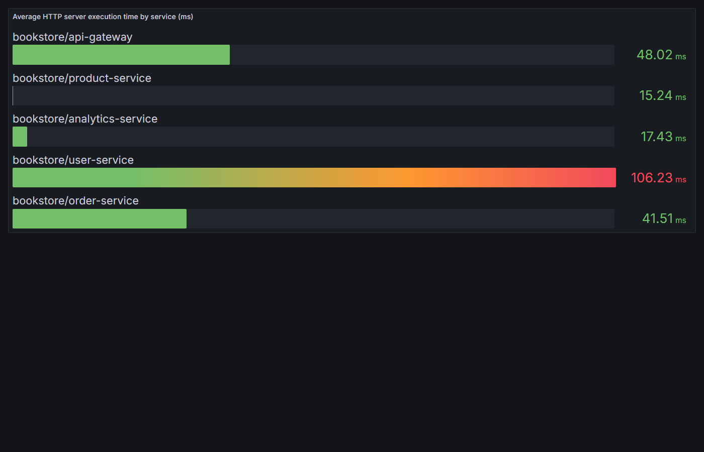

This report explores the bookstore-microservices project from the running implementation. I inspected gateway routes, service route handlers, persistence modules, messaging publishers and consumers, gRPC clients, circuit breaker code, and the observability stack. I then started the Docker Compose infrastructure, created authenticated requests through the API Gateway, recorded the required gRPC and REST timing samples, and captured a Grafana panel from Mimir/OpenTelemetry metrics.
| Route | Service | Inter-Service | Data Store | Messaging | Purpose |
|---|---|---|---|---|---|
POST /api/users/register |
User Service | N/A | MongoDB bookstore.users |
N/A | Creates a user, hashes the password, stores the account, and returns a JWT. |
POST /api/users/login |
User Service | N/A | MongoDB bookstore.users |
N/A | Validates username/password credentials and returns a signed JWT. |
GET /api/users/me |
User Service | N/A | MongoDB bookstore.users |
N/A | Returns the authenticated user's profile without the password field. |
GET /api/products |
Product Service | N/A | PostgreSQL products.books |
N/A | Lists all product records in ascending ID order. |
POST /api/products |
Product Service | N/A | PostgreSQL products.books |
RabbitMQ queue products.created published |
Creates a product after validation and publishes a product-created event. |
DELETE /api/products/:id |
Product Service | gRPC to Order Service: DeleteOrdersByProduct |
PostgreSQL products.books and orders.orders |
RabbitMQ queue products.deleted published after success |
Deletes a product and associated orders; restores the product if order deletion fails. |
POST /api/orders |
Order Service | gRPC to Product Service: GetProduct |
PostgreSQL orders.orders |
RabbitMQ queue orders.created published |
Validates the product, creates an order, and publishes an order-created event. |
GET /api/orders |
Order Service | N/A | PostgreSQL orders.orders |
N/A | Returns all orders in descending ID order. |
GET /api/notifications/events |
Notification Service | SSE stream to frontend client | N/A; in-memory SSE client registry | Consumes RabbitMQ queues orders.created, products.created, products.deleted for pushed notifications |
Opens an authenticated Server-Sent Events connection for real-time notifications. |
POST /api/analytics/track |
Analytics Service | Kafka producer | N/A | Kafka topic user-interactions published |
Receives a frontend interaction event and publishes it for dashboard processing. |
SSE is implemented by the Notification Service. The public gateway endpoint is
GET /api/notifications/events, which is rewritten to service-level
GET /events. The endpoint requires a JWT and returns
Content-Type: text/event-stream.
| Event | Observed payload structure |
|---|---|
connected |
{ "userId": "<authenticated user id>" } |
notification |
{ "notification": { "id", "title", "body", "type", "metadata", "seen", "createdAt" } } |
heartbeat |
{}, emitted every 30 seconds to keep the connection alive. |
Figure 1. JWT authentication and authenticated product creation through the required actors.
Figure 2. Circuit breaker flow using actual order-service functions: fetchProductById, preRequest, handleSuccess, handleFailure, and open.
The circuit breaker is necessary because order creation depends on Product Service lookups. If Product Service is slow or unavailable,
repeated gRPC deadline failures could block Order Service threads and create cascading failure. The breaker opens after configured timeout failures,
rejects calls quickly while open, and later uses HALF_OPEN to test recovery before returning to CLOSED.
The compensating transaction is implemented on the public route DELETE /api/products/:id
(service-level route DELETE /:id in Product Service). The handler calls
productService.deleteProduct(id, user).
The product is first read and deleted from the Product database. Product Service then calls Order Service over gRPC
through deleteOrdersByProduct(id) to delete associated orders. If the order deletion fails or the Order Service
circuit is open, Product Service compensates by calling productRepository.restore(product), inserting the
original product row back into products.books. The API returns an error message stating that the product has been restored.
I used the existing timing log around the product lookup in order-service/src/services/orderService.js.
First I ran five order creation attempts with the normal gRPC call. Then I temporarily commented out
fetchProductById(productId), used the existing REST fallback fetchProductByIdRest(productId),
rebuilt only Order Service, and repeated five order creation attempts. After recording REST results, I restored the source
back to the original gRPC call.
| Attempt | gRPC time logged by Order Service (ms) | REST fallback time logged by Order Service (ms) |
|---|---|---|
| 1 | 67.27 | 47.95 |
| 2 | 4.94 | 6.10 |
| 3 | 5.19 | 5.65 |
| 4 | 5.19 | 5.70 |
| 5 | 5.06 | 5.90 |
| Average | 17.53 | 14.26 |
| Warm average, attempts 2-5 | 5.10 | 5.84 |
Figure 3. Five timing samples for the Product Service lookup inside order creation, comparing gRPC and REST fallback.
The first attempt in both modes includes cold-path overhead after service startup or rebuild. Including that first attempt, REST averaged 14.26 ms and gRPC averaged 17.53 ms. After warmup, gRPC averaged 5.10 ms and REST averaged 5.84 ms, so the normal gRPC path was slightly faster and more consistent in the repeated steady-state calls.
| Routing key / queue | Producer | Consumer | Use in this project |
|---|---|---|---|
orders.created |
Order Service, publishOrderCreated |
Notification Service, handleOrderCreated |
Creates and pushes a notification when an order is placed. |
products.created |
Product Service, publishProductCreated |
Notification Service, handleProductCreated |
Creates and pushes a notification when a product is added. |
products.deleted |
Product Service, publishProductDeleted |
Notification Service, handleProductDeleted |
Broadcasts product deletion notifications to currently connected users. |
| Kafka topic | Producer | Consumer | Use in this project |
|---|---|---|---|
user-interactions |
Analytics Service, producer.send in POST /track |
Analytics Dashboard Service, consumer group dashboard-group |
Streams frontend interaction events for in-memory dashboard aggregation. |
RabbitMQ is used for operational domain events that should trigger notifications after product and order actions. The code sends directly to durable queues named after the event type, and Notification Service consumes those queues. Kafka is used for analytics event streaming: Analytics Service produces click/interaction events, while the dashboard service consumes the stream and maintains aggregates such as total clicks, top buttons, top users, and recent events.
The dual approach fits the project because RabbitMQ handles task-like notification delivery with simple named queues, while Kafka keeps the analytics path stream-oriented and independently consumable by the dashboard.
I captured a Grafana panel backed by the Mimir datasource. The panel uses the OpenTelemetry HTTP duration metric:
sum by (job) (http_server_duration_milliseconds_sum) / sum by (job) (http_server_duration_milliseconds_count).

Figure 4. Grafana panel showing average HTTP server execution time per service from Mimir/OpenTelemetry metrics.
The observed per-service execution times were approximately: User Service 106.23 ms, API Gateway 48.02 ms, Order Service 41.51 ms, Analytics Service 17.43 ms, and Product Service 15.24 ms. The main hotspot is User Service, which is expected because register/login requests include bcrypt password work and MongoDB access. API Gateway and Order Service are next because they sit in the request path for proxied order creation, with Order Service also performing product lookup and order persistence. Product and Analytics Service calls were comparatively low.